Fiches CE2
328 fiches d'exercices CE2 en français : lecture, texte à trous et compréhension orale, à imprimer (PDF) avec corrigé.
328 ressources
Thème
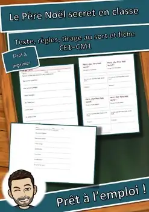
Le Père Noël secret en classe: Texte, règles, tirage au sort et fiche, CE1–CM1
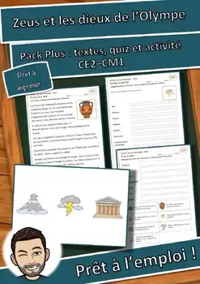
Atelier des personnages : Zeus – Fiche à lire et à compléter, CE2–CM1 (gratuit)
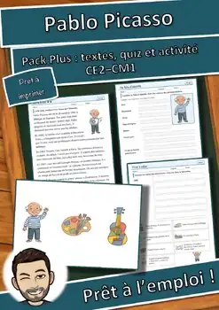
Atelier des personnages : Picasso – Fiche à lire et à compléter, CE2–CM1 (gratuit)
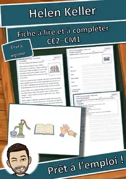
Atelier des personnages : Helen Keller – Fiche à lire et à compléter, CE2–CM1 (gratuit)
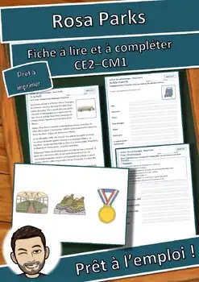
Atelier des personnages : Rosa Parks – Fiche à lire et à compléter, CE2–CM1 (gratuit)
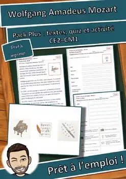
Atelier des personnages : Mozart – Fiche à lire et à compléter, CE2–CM1 (gratuit)
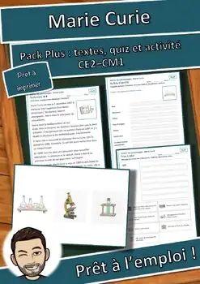
Atelier des personnages : Marie Curie – Fiche à lire et à compléter, CE2–CM1 (gratuit)
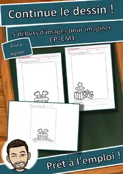
Continue le dessin !: 5 débuts d'images pour imaginer, CP–CM1
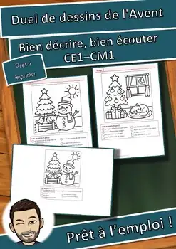
Duel de dessins de l'Avent: Bien décrire, bien écouter, CE1–CM1
Cartes-questions d'hiver: 32 questions pour cercles et discussions, CE1–CM1
Petit Bac de l'hiver: Le jeu de mots du temps de l'Avent, CE1–CM1
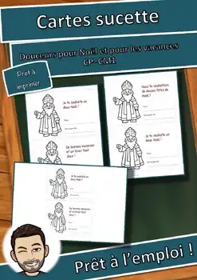
Cartes sucette: Douceurs pour Noël et pour les vacances, CP–CM1
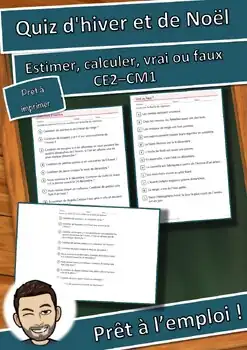
Quiz d'hiver et de Noël: Estimer, calculer, vrai ou faux, CE2–CM1
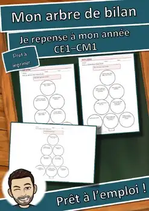
Mon arbre de bilan: Je repense à mon année, CE1–CM1
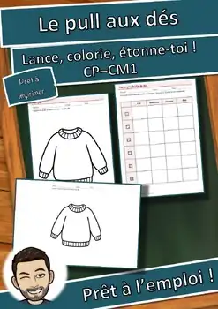
Le pull aux dés: Lance, colorie, étonne-toi !, CP–CM1
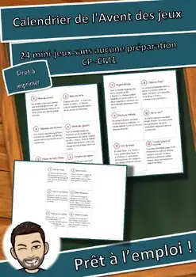
Calendrier de l'Avent des jeux: 24 mini-jeux sans aucune préparation, CP–CM1
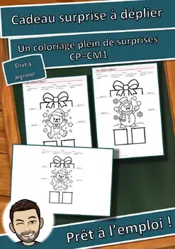
Cadeau surprise à déplier: Un coloriage plein de surprises, CP–CM1
Dinosaures à colorier, lire et bricoler : fiches et mémo, CP–CE2
Dinosaures à colorier, lire et bricoler : fiches et mémo, CP–CE2
Premiers secours pour enfants : affiches, appel au 112 et plaies, CE1–CM1
Premiers secours pour enfants : affiches, appel au 112 et plaies, CE1–CM1
Atelier de classe : Affiches de motivation pour la classe – gratuit, du CP au CM1
Atelier de classe : Affiches de motivation pour la classe – gratuit, du CP au CM1
Atelier de classe : Affiches des règles de classe – gratuit, du CP au CM1
Atelier de classe : Affiches des règles de classe – gratuit, du CP au CM1
Atelier de classe : Affiches de motivation pour la classe – Pack Plus, du CP au CM1
Atelier de classe : Affiches de motivation pour la classe – Pack Plus, du CP au CM1
Atelier de classe : Affiches des règles de classe – Pack Plus, du CP au CM1
Atelier de classe : Affiches des règles de classe – Pack Plus, du CP au CM1
Exposition des continents : lot des 7 continents – panneaux et fiches
Exposition des continents : lot des 7 continents – panneaux et fiches
Exposition des continents : Antarctique – panneaux et fiches en 3 niveaux
Exposition des continents : Antarctique – panneaux et fiches en 3 niveaux
Exposition des continents : Océanie – panneaux et fiches en 3 niveaux
Exposition des continents : Océanie – panneaux et fiches en 3 niveaux
Exposition des continents : Amérique du Sud – panneaux et fiches en 3 niveaux
Exposition des continents : Amérique du Sud – panneaux et fiches en 3 niveaux
Exposition des continents : Amérique du Nord – panneaux et fiches en 3 niveaux
Exposition des continents : Amérique du Nord – panneaux et fiches en 3 niveaux
Exposition des continents : Europe – panneaux et fiches en 3 niveaux
Exposition des continents : Europe – panneaux et fiches en 3 niveaux
Exposition des continents : Asie – panneaux et fiches en 3 niveaux
Exposition des continents : Asie – panneaux et fiches en 3 niveaux
Exposition des continents : Afrique – panneaux et fiches en 3 niveaux
Exposition des continents : Afrique – panneaux et fiches en 3 niveaux
Crèche de Noël à colorier, plier et monter avec l'histoire de Noël (CP à CM1)
Crèche de Noël à colorier, plier et monter avec l'histoire de Noël (CP à CM1)
Cartes et étiquettes cadeaux de Noël : 4 cartes pliées, 8 étiquettes et personnages (CP à CM1)
Cartes et étiquettes cadeaux de Noël : 4 cartes pliées, 8 étiquettes et personnages (CP à CM1)
Ange de Noël en 3D : gabarit à découper et à monter avec 8 anges et 5 robes (CP à CM1)
Ange de Noël en 3D : gabarit à découper et à monter avec 8 anges et 5 robes (CP à CM1)
Calendrier de l'Avent des énigmes : 24 énigmes avec lettres et phrase secrète, CE1 à CE2 (+CM1)
Calendrier de l'Avent des énigmes : 24 énigmes avec lettres et phrase secrète, CE1 à CE2 (+CM1)
Sapin de Noël de la classe : puzzle à colorier, 20–40 pièces avec plan, cycle 2
Sapin de Noël de la classe : puzzle à colorier, 20–40 pièces avec plan, cycle 2
J'ai, qui a ? Loisirs – Boucles de lecture – du CP au CM1
J'ai, qui a ? Loisirs – Boucles de lecture – du CP au CM1
Mots mêlés : Chevaliers et châteaux – Mots mêlés – du CP au CM1
Mots mêlés : Chevaliers et châteaux – Mots mêlés – du CP au CM1
Mots mêlés : Dinosaures – Mots mêlés – du CP au CM1
Mots mêlés : Dinosaures – Mots mêlés – du CP au CM1
Mots mêlés : L'espace – Mots mêlés – du CP au CM1
Mots mêlés : L'espace – Mots mêlés – du CP au CM1
Mots mêlés : Au bord de la mer – Mots mêlés – du CP au CM1
Mots mêlés : Au bord de la mer – Mots mêlés – du CP au CM1
Mots mêlés : Les véhicules – Mots mêlés – du CP au CM1
Mots mêlés : Les véhicules – Mots mêlés – du CP au CM1
Mots mêlés : Été – Mots mêlés – du CP au CM1
Mots mêlés : Été – Mots mêlés – du CP au CM1
J'ai, qui a ? Les abeilles – Boucles de lecture – du CP au CM1
J'ai, qui a ? Les abeilles – Boucles de lecture – du CP au CM1
Cartes images et mots : Pirates – Cartes images et mots – du CP au CM1
Cartes images et mots : Pirates – Cartes images et mots – du CP au CM1
Lire, colorier et coller : Le cirque – Lire et colorier – du CP au CM1
Lire, colorier et coller : Le cirque – Lire et colorier – du CP au CM1
J'ai, qui a ? Printemps – Boucles de lecture – du CP au CM1
J'ai, qui a ? Printemps – Boucles de lecture – du CP au CM1
Cartes images et mots : Chevaliers et châteaux – Cartes images et mots – du CP au CM1
Cartes images et mots : Chevaliers et châteaux – Cartes images et mots – du CP au CM1
Aucune ressource trouvée – essaie un autre mot ou un autre filtre.